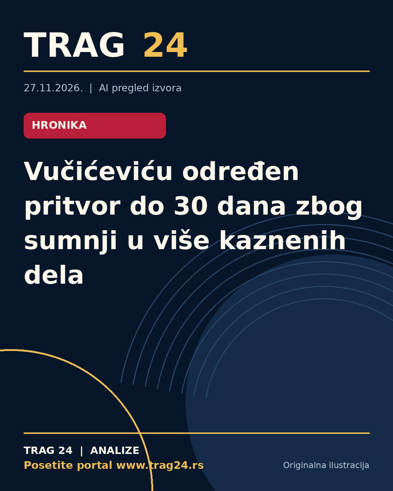

Vučićeviću određen pritvor do 30 dana zbog sumnji u više kaznenih dela

ŠTA SE DOGODILO
Glavnom i odgovornom uredniku i vlasniku Informera Draganu J. Vučićeviću određen je pritvor do 30 dana. Odluku je doneo sudija za prethodni postupak Drugog osnovnog suda u Beogradu, u skladu sa predlogom Drugog osnovnog javnog tužilaštva.
HRONOLOGIJA
Vučićević je prethodno ispitan u Drugom osnovnom javnom tužilaštvu zbog sumnje da je počinio dva kaznena dela – ometanje pravde i produženo kazneno delo izazivanja panike. Hapšenje je usledilo neposredno nakon što je Vučićević priveden u blizini zgrade televizije Informer. Sud je odlučio o pritvoru po prijemu predloga tužilaštva, navodeći rizik od ponavljanja kaznenih dela ako bi ostao na slobodi.
ŠTA NAVODE IZVORI
Iz Drugog osnovnog suda saopšteno je da je pritvor određen jer postoje okolnosti koje ukazuju da bi Vučićević u kratkom roku mogao ponoviti krivična dela. Tužilaštvo ga sumnjiči da je tokom dužeg perioda svojim izjavama na televiziji izazivao paniku i nered u javnosti, kao i da je ometao pravdu objavljivanjem tajnih dokumenata i targetiranjem jedne tužiteljke. Odvjetnik Vučićevića izjavio je da se još nisu upoznali sa sadržajem rešenja o pritvoru i nije davao detaljnije komentare.
ŠTA JE POTVRĐENO
Pritvor do 30 dana je potvrđen od strane Drugog osnovnog suda u Beogradu. Postoji sumnja da je Vučićević počinio navedena krivična dela, što je osnov za njegov pritvor. Stupanjem na snagu mere pritvora, sleduje mogućnost žalbe u roku od tri dana od uručenja rešenja.
ŠTA NIJE POTVRĐENO
Iz dostupnih izvora ne postoje detalji o tačnim izjavama ili dokumentima koji se spominju kao dokaz u ovom slučaju. Takođe, nije potvrđeno da je Vučićević ili bilo ko drugi pravosnažno osuđen za navedena krivična dela.
ŠTA OSTАJE OTVORENO: Ostaje nepoznato kako će se dalje odvijati pravni proces protiv Vučićevića, kao i da li će eventualno biti izređene dodatne mere ili optužbe. Takođe, nije poznato kakav će biti odgovor Vučićevića i njegovog pravnog tima na optužbe i određeni pritvor.
Izvori
- https://n1info.hr/regija/vlasniku-informera-odredjen-pritvor-do-30-dana/
- https://autonomija.info/drugi-osnovni-sud-potvrdio-da-je-odredjen-pritvor-do-30-dana-uredniku-informera-draganu-j-vucicevicu/
- https://vreme.com/vesti/dragan-j-vucicevic-informer-pritvor/
Ova analiza je pripremljena uz pomoć veštačke inteligencije na osnovu javno dostupnih izvora. Navodi izvora nisu nužno nezavisno potvrđeni.